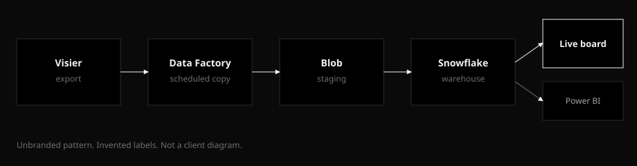

Home / work / pipeline
Scheduled insights when SQL is unreachable
Case note. Stack: Azure SQL, Blob, Azure Data Factory, Power BI. Invented setting: a health-ops warehouse that BI could not reach directly.
Situation
A standing pack was rebuilt by hand on a cycle. The numbers lived in Azure SQL. The BI workspace sat outside the warehouse network. Direct SQL from the report was blocked, so every refresh waited on someone running an extract.
Constraint
Firewall stays. No tunnel from Power BI into the database. The warehouse team would allow a scheduled job that they owned, writing files to a staging account they already used.
Build
- Azure SQL extract. An allow-listed job pulls the tables the model needs. No ad-hoc desktop queries.
- Blob staging. Daily CSV overwrite in a container. Latest file wins. BI never sees the live database.
- Azure Data Factory. A scheduled pipeline copies and, if needed, lightly types the files. Failures show up in the factory run history instead of a personal inbox.
- Power BI. The semantic model points at the staged files. Refresh is a schedule, not a ticket.
Architecture

Result
The pack stopped depending on a person being at a desk. Stakeholders opened the same pages they already knew. Public stand-in for the interaction pattern: the workforce snapshot — fake org, fake people, not this warehouse.
This diagram is new and unbranded. It is not a client graphic.